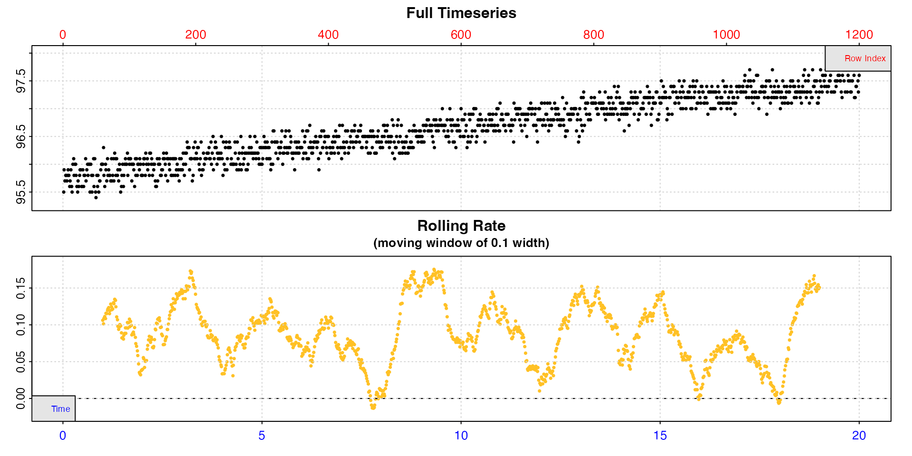
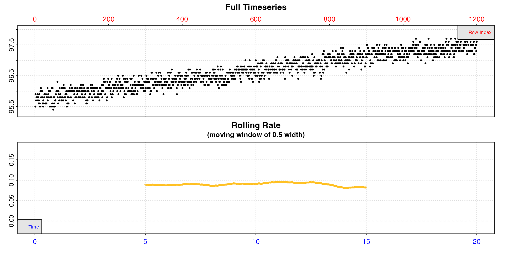
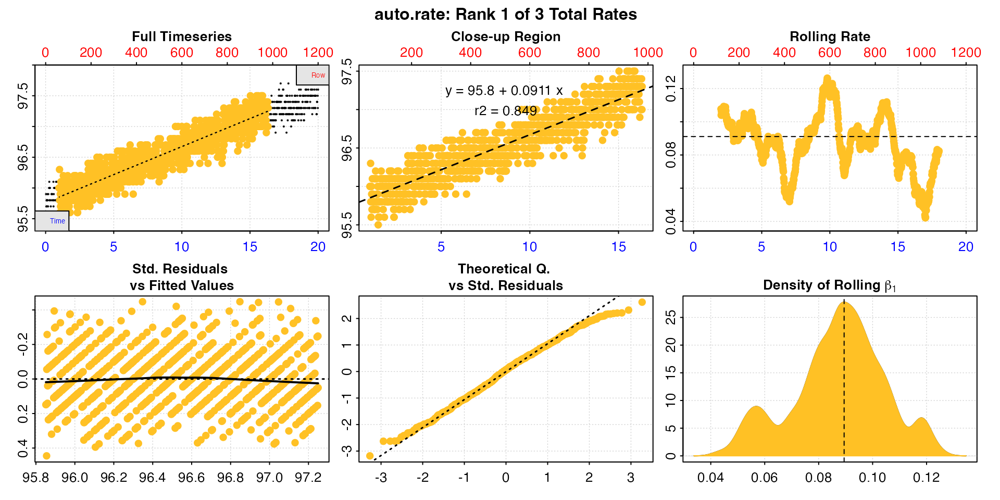
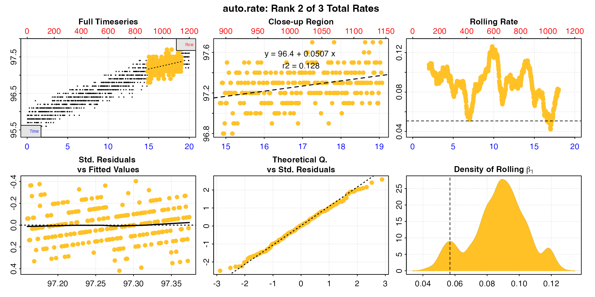
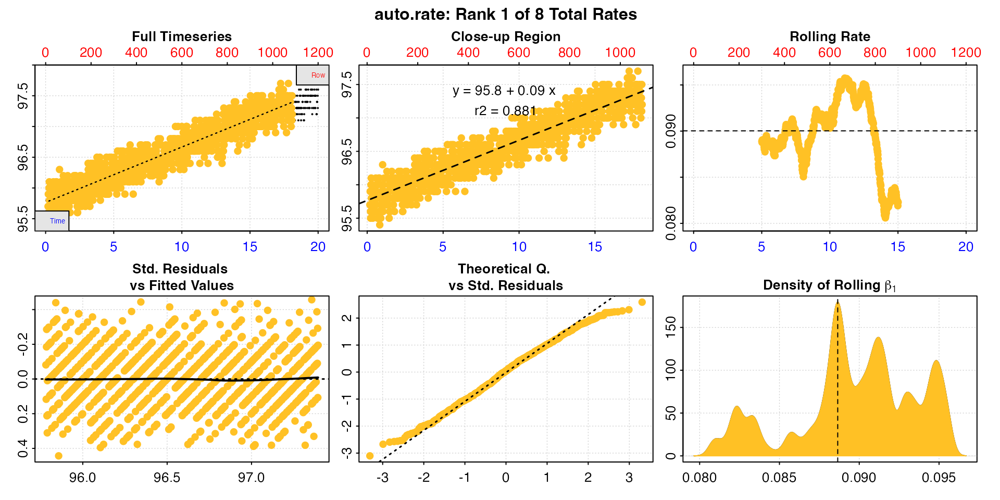
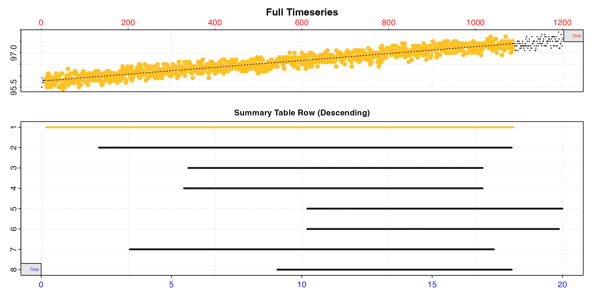

While the majority of respirometry studies are concerned with oxygen
uptake by various organisms, there are many studies of organisms such as
plants, algae and corals where oxygen production rates are of primary
interest. We have designed respR to be able to process and
calculate rates from oxygen production data in exactly the same way as
for consumption data. In fact, the package has already been
used by several studies to determine the production rates of
diatoms, algae, and corals.
Here we will use the included algae.rd dataset to
briefly show how production data may be processed and used to extract
production rates. It contains 20 hours of data recorded once per minute
on oxygen production by an algae. More information on the data can be
seen by running ?algae.rd.
Like all analyses in respR the first step is to inspect
the data for common issues.
inspect(algae.rd, rate.rev = FALSE)
#> inspect: Applying column default of 'time = 1'
#> inspect: Applying column default of 'oxygen = 2'
#> Warning: inspect: Time values are not evenly-spaced (numerically).
#> inspect: Data issues detected. For more information use print().
#>
#> # print.inspect # -----------------------
#> Time Oxygen
#> numeric pass pass
#> Inf/-Inf pass pass
#> NA/NaN pass pass
#> sequential pass -
#> duplicated pass -
#> evenly-spaced WARN -
#>
#> Uneven Time data locations (first 20 shown) in column: Time
#> [1] 1 2 3 4 5 6 7 8 9 10 11 12 13 14 15 16 17 18 19 20
#> Minimum and Maximum intervals in uneven Time data:
#> [1] 0.01 0.02
#> -----------------------------------------
In respR oxygen uptake rates are represented by negative
values since they represent a negative slope of oxygen against time.
Since the focus of the package is on uptake rates, by default the
inspect() function plots rolling rates on a reversed axis
so that higher oxygen uptake rates appear higher on the plot. To examine
production rates, which are positive, we pass
rate.rev = FALSE to reverse this behaviour
We can see the data passes most of the checks. The warning about uneven time can be safely disregarded as it stems from the per minute recording interval being converted to decimalised hours, and we can see the minimum and maximum intervals indicate there are no major gaps.
We can see that at the default rolling rate width input
of 10% of the data the rate is very variable, from zero to over 0.15.
However, there are characteristics of the raw data which could cause
this; it has a fairly shallow overall slope and high relative noise
level, therefore rates over narrow time windows would be expected to be
variable. Instead we can pick a more appropriate width that will give a
better idea of the true rate.
algae_insp <- inspect(algae.rd, width = 0.5, rate.rev = FALSE)
#> inspect: Applying column default of 'time = 1'
#> inspect: Applying column default of 'oxygen = 2'
#> Warning: inspect: Time values are not evenly-spaced (numerically).
#> inspect: Data issues detected. For more information use print().
We can see now that rate is actually highly stable across the dataset, and this tells us when we come to calculate rates we should probably use rates determined over this width or higher, and the value will be around 0.09 to 0.10.
Since the rate appears to be fairly stable across the dataset we will
use auto_rate() to identify the most linear region.
algae_rate <- auto_rate(algae_insp, rate.rev = FALSE)
#> auto_rate: Applying default 'width' of 0.2
This is a good opportunity to explain how the auto_rate
"linear" method works and how to interpret the outputs.
Briefly (see vignette("auto_rate") for more detail), the
linear method uses the input width as a starting seed value
to calculate a rolling rate across the dataset (seen in panel 3). It
then uses these rates to identify linear regions using kernel density
estimation (KDE, see panel 6). Peaks in this plot represent linear
regions, that is areas of stable rates at that width
representative of that region as a whole. It then re-samples these
regions and runs additional linear analysis at different widths to
arrive at a final rate for this region. This is why the final, high
ranked rates tend to be over widths greater than the input
width, as can be seen here with the top ranked result.
summary(algae_rate)
#>
#> # summary.auto_rate # -------------------
#>
#> === Summary of Results by Kernel Density Rank ===
#> rep rank intercept_b0 slope_b1 rsq density row endrow time endtime oxy endoxy rate
#> 1: NA 1 95.8 0.0911 0.849 27.78 59 980 0.98 16.3 96.0 97.3 0.0911
#> 2: NA 2 96.4 0.0507 0.128 8.93 891 1144 14.85 19.1 97.1 97.3 0.0507
#> 3: NA 3 95.5 0.1194 0.441 6.86 460 714 7.67 11.9 96.2 96.6 0.1194
#>
#> Regressions : 961 | Results : 3 | Method : linear | Roll width : 240 | Roll type : row
#> -----------------------------------------Here, we have a very good top ranked result; it is calculated over a large part of the dataset, is around the value we expected from inspecting it earlier, this value is in the middle of the range of rolling rates at the default input width (dashed line, panel 3), and has a high r-squared in comparison to the other results.
Generally, the higher and wider the peak in the KDE, the more linear
the region. We can see three peaks in the KDE (panel 6). However, the
other two are very much lower and narrower. Let’s look at the second
ranked result using pos.
plot(algae_rate, pos = 2, rate.rev = FALSE) 
Here we can see this rate is over a much narrower region towards the end of the data, the value of 0.05 is very much lower than we are expecting, and at the extremes of the range (panel 3). While this may be a linear region within the data, it is very much not representative of the data as a whole.
In this analysis, we can easily see that the top ranked result is the
one we want, and we can exclude the other two. See
vignette("select_rate") for more advanced filtering of
auto_rate results by many different criteria.
auto_rate
We saw in the inspect section
above a higher width made the rolling rate much more
consistent. It is not necessarily always the case increasing the default
of width = 0.2 will improve the results of
auto_rate however, as it gives the KDE much less variation
to work with.
Here is the summary table of the results when we increase the width
to 0.5. Note that the rolling rate plot (panel 3) in which the rate
looks highly variable is now on a much narrower y-axis range. In fact,
it is identical to the one in the inspect plot above but on different axes ranges.
auto_rate(algae_insp, width = 0.5, rate.rev = FALSE)$summary
#> rep rank intercept_b0 slope_b1 rsq density row endrow time endtime oxy endoxy rate
#> 1: NA 1 95.8 0.0900 0.881 179.5 11 1086 0.18 18.1 95.7 97.2 0.0900
#> 2: NA 2 95.8 0.0899 0.855 138.4 132 1083 2.20 18.1 96.2 97.3 0.0899
#> 3: NA 3 95.7 0.0916 0.761 111.3 338 1016 5.63 16.9 96.2 97.3 0.0916
#> 4: NA 4 95.8 0.0910 0.763 74.4 328 1016 5.47 16.9 96.3 97.3 0.0910
#> 5: NA 5 95.9 0.0813 0.651 57.9 612 1200 10.20 20.0 96.9 97.6 0.0813
#> 6: NA 6 95.9 0.0820 0.651 46.9 612 1192 10.20 19.9 96.9 97.6 0.0820
#> 7: NA 7 95.8 0.0903 0.824 27.4 203 1042 3.38 17.4 96.3 97.2 0.0903
#> 8: NA 8 95.8 0.0852 0.639 20.2 543 1083 9.05 18.1 96.7 97.3 0.0852This doesn’t really improve our analysis very much, and could be more
confusing since there are more results. There is still one central peak
in the KDE analysis, which uses more of the dataset, but it is largely
the same as the top ranked result in the earlier analysis, differing in
rate value by only 1-2%. The other results are more consistent in their
rate values, but they are largely redundant as they broadly use the same
range of the data. We can visualise this using the internal
overlap.p() function.
auto_rate(algae_insp, width = 0.5, rate.rev = FALSE, plot = FALSE) |>
respR:::overlap.p()
#> overlap.p: Plotting all rate(s)...
So we could use the top ranked result here, but the ultimate rate
value barely differs from our earlier analysis, and in this case the
default width provided us with a valid result, so there is
no real reason to exclude it. This does however serve as a good example
of how users should experiment with different widths in
auto_rate to get an idea of how it might affect analyses.
Certain datasets will benefit from this more than others.
See Prinzing et al. 2021 for an excellent discussion of appropriate widths in rolling regressions to determine maximum metabolic rates, much of which is relevant to extracting rates of any kind.
Oxygen production rates can be adjusted in the exact same way as
uptake rates. In most oxygen production respirometry, background is
likely similar to that in uptake respirometry, that is microbial
organisms are consuming oxygen. However there may be cases where some of
the production could be contributed by other organisms, such as another
algae growing on the surfaces of the respirometer. What is important is
to quantify this by running blank experiments which are identical in
every way except for the presence of the specimen you are interested in.
See vignette("adjust_rate") for details of the numerous
ways experiments can be background adjusted, most of which is equally
relevant to oxygen production respirometry.
Here, we don’t have a control experiment to work with, so we will just invent some values. The most important aspect here is to be careful with the signs of the rates we are using; production rates are positive, uptake rates negative.
This is how you would adjust for a oxygen uptake by micro-organisms. The uptake background is negative, which means the production rates have been under-estimated.
algae_rate_adj <- adjust_rate(algae_rate, by = -0.007)
#> adjust_rate: Rate adjustments applied using "mean" method.
summary(algae_rate_adj)
#>
#> # summary.adjust_rate # -----------------
#>
#> Adjustment was applied using 'mean' method.
#> Summary of all rate results:
#>
#> rep rank intercept_b0 slope_b1 rsq density row endrow time endtime oxy endoxy rate adjustment rate.adjusted
#> 1: NA 1 95.8 0.0911 0.849 27.78 59 980 0.98 16.3 96.0 97.3 0.0911 -0.007 0.0981
#> 2: NA 2 96.4 0.0507 0.128 8.93 891 1144 14.85 19.1 97.1 97.3 0.0507 -0.007 0.0577
#> 3: NA 3 95.5 0.1194 0.441 6.86 460 714 7.67 11.9 96.2 96.6 0.1194 -0.007 0.1264
#> -----------------------------------------If however you find the control has a background input of oxygen it is entered as a positive value, in which case the specimen production rates have been over-estimated.
adjust_rate(algae_rate, by = 0.009) |>
summary()
#> adjust_rate: Rate adjustments applied using "mean" method.
#>
#> # summary.adjust_rate # -----------------
#>
#> Adjustment was applied using 'mean' method.
#> Summary of all rate results:
#>
#> rep rank intercept_b0 slope_b1 rsq density row endrow time endtime oxy endoxy rate adjustment rate.adjusted
#> 1: NA 1 95.8 0.0911 0.849 27.78 59 980 0.98 16.3 96.0 97.3 0.0911 0.009 0.0821
#> 2: NA 2 96.4 0.0507 0.128 8.93 891 1144 14.85 19.1 97.1 97.3 0.0507 0.009 0.0417
#> 3: NA 3 95.5 0.1194 0.441 6.86 460 714 7.67 11.9 96.2 96.6 0.1194 0.009 0.1104
#> -----------------------------------------See also Case
9 in vignette("adjust_rate") where we perform a similar
adjustment to production rates.
Production rates are converted to units in exactly the same way as uptake rates.
New in respR v2.0 is the ability to output rates as
surface-area specific, which is often used to express oxygen production
of algae and corals per unit area, so we’ll add an area
input and specify an area-specific output.unit.
The area input must be in units of \(m^2\). Here we can also use the new
convert_val() function to enter the area
input. This function converts between units of area, mass, etc. It is
particularly handy in convert_rate because the default
output unit for area conversions is \(m^2\). Let’s say our algae is 10 \(cm^2\). We don’t have to do this conversion
ourselves, but can rely on convert_val. We don’t even need
to tell it this is an area conversion - it detects this automatically
from the input units.
algae_rate_conv <- convert_rate(algae_rate_adj,
oxy.unit = "%Air",
time.unit = "hr",
output.unit = "mg/h/m2",
area = convert_val(10, "cm2"),
volume = 0.1,
t = 12, S = 30, P =1.01)
#> convert_rate: Object of class 'adjust_rate' detected. Converting all adjusted rates in '$rate.adjusted'.In this case, we were only interested in the top ranked rate result.
We can extract it using summary and the pos
and export inputs. We can see the converted
area input in \(m^2\) in
the summary table.
summary(algae_rate_conv, pos = 1, export = TRUE)
#>
#> # summary.convert_rate # ----------------
#> Summary of converted rates from entered 'pos' rank(s):
#>
#> rep rank intercept_b0 slope_b1 rsq density row endrow time endtime oxy endoxy rate adjustment rate.adjusted rate.input oxy.unit time.unit volume mass area S t P rate.abs rate.m.spec rate.a.spec output.unit rate.output
#> 1: NA 1 95.8 0.0911 0.849 27.8 59 980 0.98 16.3 96 97.3 0.0911 -0.007 0.0981 0.0981 %Air hr 0.1 NA 0.001 30 12 1.01 0.000872 NA 0.872 mgO2/hr/m2 0.872
#> -----------------------------------------The exported data frame will contain all rate regression parameters and data locations, adjustments (if applied), units, and more. This is a great way of exporting all the relevant data for your final results.